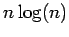

Solange Kontrollpartikel sich nicht bewegen, könnten sie auch einmal vorsortiert werden, um sie dann in einem Schritt eines Merge-Sort-Algorithmus mit der sortierten Liste der bewegten Partikel zu kombinieren. Dadurch wäre die Laufzeitordnung der Sortierung nurnoch in der Anzahl der bewegten Partikel 
und linear in der Anzahl der Kontrollpartikel.
Abbildung 3.4:
Die Orientierung des verwendeten Dreiecks bestimmt die Normalenrichtung.
|
|
Abbildung:
Lage des Kontrollpartikels in Verhältnis zum betroffenen Bereich.
|
|
Leo Wandersleb
2005-01-17